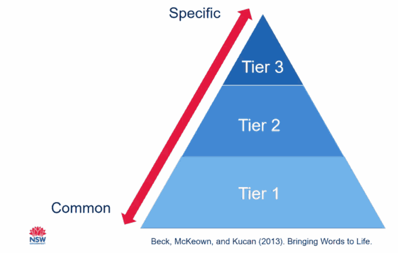

Whole-school strategy · Tier 2 & 3 Vocabulary
Whole School Vocabulary Tiers
Overview
Vocabulary is central to comprehension, reasoning and effective communication. Students learn many words through everyday encounters, but important academic and subject-specific vocabulary also requires explicit instruction. As Stahl (2005) observes, knowing a word involves more than knowing its definition: it includes understanding how it connects to wider knowledge and contexts.
Beck, McKeown and Kucan’s three-tier model provides a useful framework for identifying which words to teach:

- Tier 1 – Everyday vocabulary: Common words generally learned through conversation and everyday experiences, such as think, kind and food.
- Tier 2 – High-utility academic vocabulary: Words used across subjects and academic texts that support precise thinking, reading and writing, such as inherent, prevalent, analyse and significance.
- Tier 3 – Subject-specific vocabulary: Specialist words used in particular disciplines or topics, such as diameter, photosynthesis, inflation and molecule.
Each unit across every KLA should have a shared list of relevant Tier 2 and Tier 3 vocabulary. These lists provide the foundation for explicit vocabulary teaching and classroom strategies, with particular attention to transferable Tier 2 words.
Implementation Sequence
Review the syllabus, common directive verbs and relevant examination questions. Identify the language students need to interpret tasks and express analytical, explanatory and evaluative thinking.
Examine core texts, readings, problems and teaching resources. Identify high-utility Tier 2 vocabulary and essential subject-specific Tier 3 terms that students need to comprehend and apply.
Compare successful responses with students’ current writing. Identify words that enable precise expression and concepts students regularly struggle to articulate.
Develop a shared Tier 2 and Tier 3 list for each unit. Include the essential vocabulary students will encounter or need to use, then prioritise a manageable subset for repeated explicit teaching. Record meanings and examples in context.
Integrate the selected words into projects, problems, task stems, models and classroom resources. Use the shared lists to inform subsequent strategies such as Vocabulary Criteria, Visible Vocab and Vocabulary Cards.
Implementation Advice
Build a comprehensive unit bank but select a feasible number of priority words for intensive teaching at any one time. Prioritise relevance, frequency, conceptual importance and usefulness across tasks rather than teaching every entry equally.
Plan repeated encounters in different contexts, including reading, discussion, retrieval activities and writing. Students need opportunities to use words, not just recognise their definitions.
Audit the unit thoroughly so the shared bank includes the vocabulary required for key content, questions and responses. Keep the bank open to purposeful refinement, rather than filling major gaps reactively later.
Teach transferable Tier 2 terms across subjects while introducing specialist Tier 3 words alongside the concepts they describe. Some words change meaning across KLAs, so model their discipline-specific use.